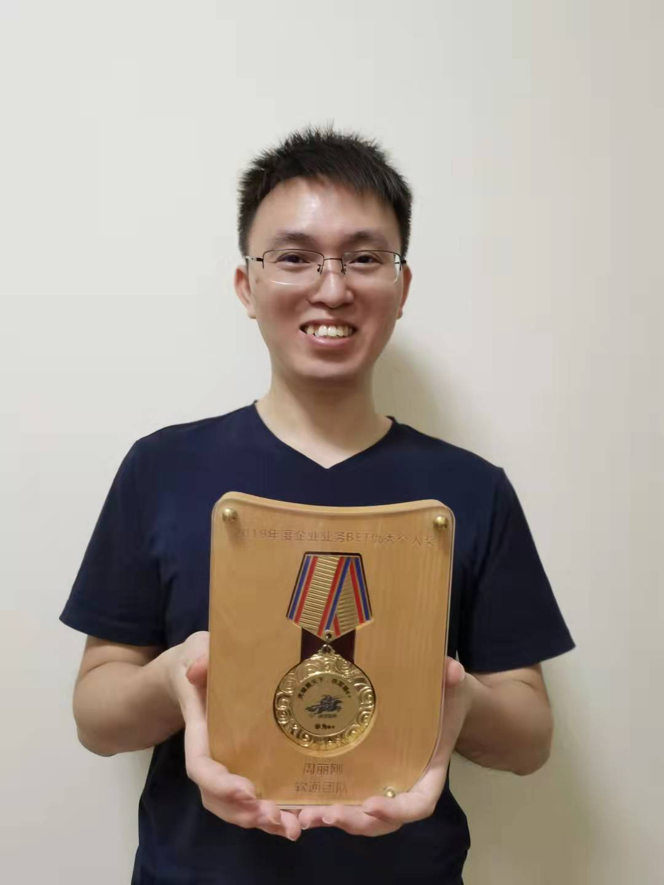
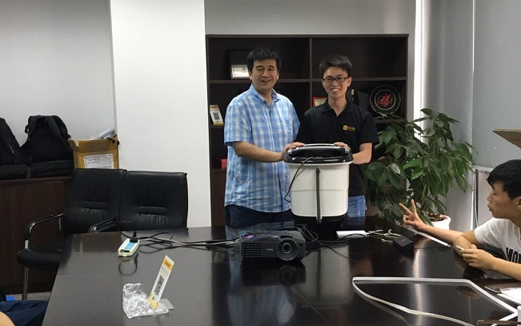
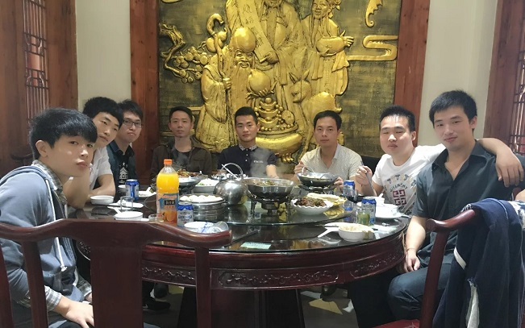
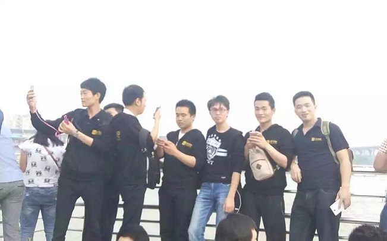

# 基本信息
姓名：周丽刚
籍贯：江西永新
学历：本科
学校：南昌大学
电话：15814469590
邮箱：15814469590@163.com
# 专业技能
- 熟悉测试理论、测试设计方法
- 熟悉功能测试、自动化测试、性能测试
- 熟悉数据库操作
- 熟悉
Python，了解Java、html、javascript
# 项目经历
# 华为 ePartner 官方网站（2020.8 ~ 至今）
职位： 测试 Leader 兼 SM
项目描述：
ePartner 网站（https://partner.huawei.com）是面向华为合作伙伴的官方网站，是一个面向合作伙伴的一站式工作平台。分前台和中台，前台为用户使用界面，使用鲁班框架，用鲁班 AUI 和鲁班卡片来管理页面；中台为前端提供服务，管理前端菜单权限、用户权限，封装接口等，使用 jalor 框架。
前端页面支持中英日俄 4 个语言，分公开页面和已登录页面，公开页面主要展示华为的销售伙伴、服务伙伴、解决方案伙伴等伙伴的介绍及加入，伙伴政策，伙伴查找，热点、新闻、活动等功能；已登录页面根据用户权限定制化了销售、服务、解决方案伙伴的工作台，菜单涵盖交易业务、用户管理、公司管理等功能。
项目职责：
1. 负责管理项目的交付和验收，主导实施敏捷活动，看护项目的进度和风险
2. 负责项目测试计划、用例设计和编写、测试报告，以及主导客户的验收
3. 管理版本的需求，参与需求方案的设计
4. 负责项目的 API 和 UI 自动化测试
5. 管理版本变更的打包和质量红线
6. 项目流程、项目工具使用培训，辅助测试工具的开发，提供测试支持
# 华为 eSales APP（2017.5 ~ 2020.8）
职位： 测试 Leader
项目描述：
eSales APP 是面向华为内部人员的移动端一站式作战平台，聚焦业务目标，支撑高频业务场景，关键业务数据实时推送，具备轻量化、定制化能力，构建以人为中心的作战平台。
eSales 面向的是一线用户，针对不同用户定制化界面，实现内容聚合、一站操作。涉及交易和权限等业务，可实时处理待办任务，查看业务单详情和进度，业绩汇总图表查看等。
eSales 历程：eSales APP 原生 -–> eSales APP 原生 + H5 开发 -–> welink 小程序 ePlus
项目职责：
1. 负责管理项目的交付和验收，与用户对接需求和方案
2. 负责项目测试计划、测试用例设计和编写、测试报告，以及主导客户的验收
3. 新员工培训：项目流程、项目工具、测试能力
4. 负责项目的 API 自动化测试
5. 参与了一些中台需求的开发，输出接口
6. 对系统熟悉，为客户提供业务支持及需求设计方案支持
# 渠道样机管理系统（2019.12 ~ 2020.3）
职位： 测试
项目描述：
渠道样机管理系统是一个面向华为合作伙伴，管理伙伴借用和归还样机的平台。采用鲁班前端 + jalor 中台开发。经销商和华为渠道经理可在平台上管理样机的借还，包含样机资产库、可接样机查询、样机借还、样机转售 4 块功能。
项目职责：
1. 三个月的短期项目，1 前端 1 中台 1 测试，负责测试，主导交付验收
2. 参与需求交接 & 串讲、测试用例设计 & 评审、测试用例编写、测试执行、BUG 管理、用户验 收、上线变更
3. 输出测试计划、测试用例、测试报告、操作手册等，整理交付材料
4. 负责项目的 API 自动化测试
# 华为合作伙伴 APP（2018. 9~ 2018.10）
职位： 测试
项目描述：
华为合作伙伴 APP 是一个面向华为全球合作伙伴的 APP，华为的经销商可以在 APP 上参与培训活动进行学习，参与活动获得的积分可在商城兑换奖品。主要功能有：生态大学、虚拟团队、订单查询、项目报备、积分商城等。生态大学、虚拟团队和积分商城是其核心功能。
项目职责：
1. 参与需求交接、需求评审、测试用例设计
2. 独立开展负责模块的测试用例设计、编写和评审、测试执行。
# 惠云购商城项目（2016. 5~ 2017.4）
职位： 测试
项目描述：
该项目是一个 B2C 网购商城，采用 B/S 架构，分为前台和后台，前台主要是 C 端用户的购买使用，后台则是给 B 端商家进行管理。前台主要是商品的展示，以及搜索、登录注册、购物车、账户管理等；后台则是会员管理、商品管理、订单管理、活动及广告管理、权限管理、系统设置、统计管理各方面的功能。
项目职责：
1. 参与项目需求评审、测试计划评审、测试方案评审、测试环境搭建
2. 主要负责的模块：后台商品管理、订单管理、活动管理、广告管理
3. 对负责模块需求点分析、测试用例编写及评审，使用 excel 编写导入禅道
4. 执行测试用例、发现缺陷并能定位一些缺陷，使用禅道提交缺陷并分配给相应的开发人员，跟踪缺陷状态，并进行回归测试
5. 编写测试日报，参与测试报告和测试总结的编写
6. 使用 SVN 进行版本管理，管理各阶段的文档
# 收钱吧 APP 项目（2014. 3~ 2016.4）
职位： 测试
项目描述：
收钱吧是定位于移动支付领域的一个收款工具，它将集合微信、支付宝、百度钱包、京东钱包、QQ 钱包、银联钱包等主流电子钱包的支付收款功能，最初以微信支付作为市场突破口，为商家提供便捷。当然，它也有 Web 端，只是对于收钱吧的介绍以及 App 的下载功能；App 端主要实现微信收款，支付宝等其他钱包处于待实现状态。主要功能有微信扫码收款、被扫收款、账单、收银员、我的店铺。
项目职责：
1. 参与需求评审、测试方案评审、测试用例评审
2. 执行测试用例，发现 BUG、提交 BUG、跟踪 BUG
3. 执行回归测试，版本迭代测试
4. 编写测试日报、参与测试报告的编写
# 我的成就


# 我与你的故事


# 我的风采